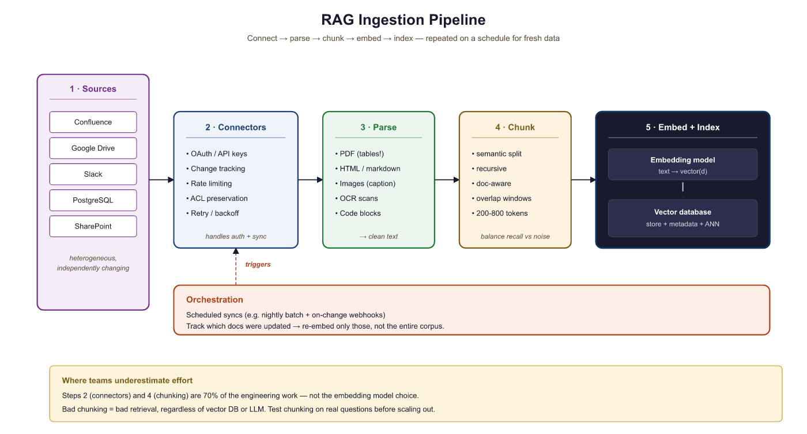

"The pipeline that runs while you sleep is worth more than the one that runs while you watch."
RAG, Battle-Tested AI Agent
Retrieval quality is bounded by ingestion quality. The most sophisticated re-ranking model and the most carefully tuned embedding space cannot compensate for documents that were parsed incorrectly, chunked carelessly, or never ingested at all. This section covers the connectors, parsers, chunking strategies, and orchestration patterns that form the foundation of every production RAG system. If RAG explained what a RAG pipeline looks like, this section explains how to build one that runs reliably every night without human intervention.
Prerequisites
This section builds on the RAG architecture fundamentals from Section 32.1 and the chunking strategies introduced there. Familiarity with vector databases from Chapter 31 is assumed. Experience with Docker, REST APIs, and scheduled job runners (cron, Airflow) will be helpful but is not required.
35.4.1 Why Ingestion Quality Dominates Retrieval Quality
The 512-token default is downstream of two unrelated constraints that happen to collide. First, most production embedding models (E5, BGE, OpenAI text-embedding-3) were trained with max sequence length 512, so longer chunks get silently truncated. Second, average-pooled embeddings exhibit the "lost-in-the-middle" effect: the longer the chunk, the more averaged-out the semantic signal. Both push toward small chunks. The opposing force is the granularity penalty: a single sentence rarely carries enough context to answer a real question, so retrieval drags in the wrong neighbors. 512 is the empirical sweet spot only because that is where the two failure modes cross. With long-context embedders the right answer shifts toward 1024-2048.
Every RAG system operates under a simple constraint: the retriever can only return documents that exist in the index, and the generator can only cite content that the retriever surfaces. If a PDF was parsed with mangled tables, the retriever will return mangled tables. If a Confluence page was never synced, the retriever cannot find it. If a 200-page document was split into 50-token fragments with no overlap, the retriever will return context-free snippets that confuse the generator. The principle is straightforward: garbage in, garbage out.
Production RAG failures are disproportionately caused by ingestion problems rather than retrieval or generation problems. A survey of deployed RAG systems by LlamaIndex (2024) found that roughly 60% of "wrong answer" failures traced back to either missing documents (never ingested), corrupted content (bad parsing), or poor chunk boundaries (relevant information split across chunks). Fixing ingestion is the highest-leverage improvement you can make to a RAG system.
Think of ingestion as the "data engineering" layer of RAG. Just as a machine learning model is only as good as its training data, a RAG system is only as good as its indexed corpus. Investing in robust connectors, careful parsing, and thoughtful chunking pays dividends across every downstream query. The best retrieval algorithm in the world cannot find a document that was never ingested, and the best LLM cannot synthesize an answer from garbled text.

then document parsing, chunking with strategy selection, and finally embedding and indexing in a vector database, with a scheduled orchestration layer triggering the pipeline35.4.2 Connectors: Pulling Data from Everywhere
Enterprise knowledge lives in dozens of systems: wikis (Confluence, Notion), document stores (Google Drive, SharePoint), databases (PostgreSQL, MongoDB), ticketing systems (Jira, Linear), communication platforms (Slack, Teams), and SaaS applications (Salesforce, HubSpot). A production RAG system needs connectors that can authenticate with each source, extract content, track changes, and handle rate limits.
Airbyte is an open-source data integration platform with over 350 pre-built connectors. Originally designed for ELT (Extract, Load, Transform) workloads, Airbyte works equally well as a RAG ingestion frontend. Each connector handles authentication, pagination, rate limiting, and schema mapping for its source. Airbyte supports incremental sync, meaning it tracks a cursor (such as a last-modified timestamp) and only fetches records that changed since the last sync. This is essential for RAG systems that need nightly refreshes without re-ingesting the entire corpus.
airbyte-connection.yaml for a Confluence-to-local-JSON sync. Three sections: source (where to read from), destination (where to write the staged JSON), and sync (schedule and incremental cursor). Substituting a different connector (Notion, SharePoint, Salesforce) changes only the sourceDefinitionId and the source-specific connectionConfiguration; the destination and sync blocks stay the same.| Section | Key | Value | Notes |
|---|---|---|---|
source | sourceDefinitionId | "confluence-source-v2" | Picks which Airbyte connector handles auth and pagination |
domain | "yourcompany.atlassian.net" | Atlassian Cloud subdomain | |
email / api_token | ${CONFLUENCE_EMAIL} / ${CONFLUENCE_API_TOKEN} | Resolved from environment to keep secrets out of git | |
space_keys | ["ENG", "PRODUCT", "OPS"] | Per-space scoping limits blast radius and cost | |
| Replace these four entries to wire a different SaaS source (Notion, SharePoint, Salesforce, etc.). | |||
destination | destinationDefinitionId | "local-json" | Stage to disk first; later runs swap to S3 or a vector DB |
destination_path | "/data/staging/confluence" | One directory per source for easy reprocessing | |
sync | schedule | {units: 24, timeUnit: "hours"} | Daily sync; tighten for high-churn sources |
syncMode | "incremental" | Fetch only records that changed since the last run | |
cursorField | "lastModified" | The field Airbyte watches to detect new or changed pages | |
For simpler setups, LlamaIndex data connectors (formerly LlamaHub) provide lightweight Python classes for common sources. These are easier to integrate into a custom pipeline but lack Airbyte's built-in scheduling, monitoring, and incremental sync tracking. A practical middle ground is to use Airbyte for high-volume, frequently-changing sources (wikis, databases) and LlamaIndex connectors for static or infrequently-updated sources (local file directories, one-time PDF batches).
The Airbyte connector catalog has grown so fast that there are now more pre-built data connectors (350+) than there are countries on Earth (195). The irony is that most enterprise RAG teams still end up writing at least one custom connector for that one internal system nobody else uses.
35.4.3 Document Parsing: Extracting Clean Text from Messy Formats
Raw documents arrive in diverse formats: PDF, HTML, DOCX, PPTX, XLSX, Markdown, images with embedded text, and scanned documents. Each format requires a different extraction strategy. The Unstructured library provides a unified API for parsing all of these formats. Its partition function automatically detects the file type and applies the appropriate extraction strategy, returning a list of Element objects (titles, narrative text, tables, list items, images) with metadata.
from unstructured.partition.auto import partition
# Parse a PDF with OCR fallback for scanned pages
elements = partition(
filename="quarterly_report.pdf",
strategy="hi_res", # Use layout detection model
pdf_infer_table_structure=True, # Extract tables as HTML
languages=["eng"],
extract_image_block_types=["Image", "Table"],
)
# Each element carries type, text, and metadata
for el in elements:
print(f"[{el.category}] {el.text[:80]}...")
print(f" Page: {el.metadata.page_number}")
print(f" Coordinates: {el.metadata.coordinates}")
# Filter to only narrative content and tables
content_elements = [
el for el in elements
if el.category in ("NarrativeText", "Title", "Table", "ListItem")
]Run your ingestion pipeline on a 50-document sample before scaling to the full corpus. Parse each document, spot-check 5 chunks per document, and compute a "parse quality score" (percentage of chunks with clean, readable text). If your score is below 90%, fix the parser before indexing everything. Re-indexing a million documents because of a parsing bug is expensive and demoralizing.
Unstructured offers three partition strategies. The fast strategy uses rule-based text extraction and works well for clean, text-native PDFs. The ocr_only strategy runs Tesseract OCR on every page, suitable for scanned documents. The hi_res strategy combines a layout detection model with OCR, providing the best quality for mixed documents (some pages text-native, some scanned) at the cost of higher latency. For most production workloads, hi_res is worth the extra processing time because it correctly identifies document structure (headers, paragraphs, tables, figures) rather than treating every page as a flat stream of text.
Apache Tika is an alternative for organizations that prefer a Java-based, server-mode parser. Tika supports over 1,000 file formats and runs as a REST service, making it easy to integrate with any language. It excels at metadata extraction (author, creation date, language) and handles edge cases like password-protected Office documents. However, Tika's table extraction and layout detection are less sophisticated than Unstructured's hi_res strategy. Many production systems use both: Tika for metadata extraction and format detection, Unstructured for content extraction.
import requests
# Apache Tika running as a REST service on localhost:9998
TIKA_URL = "http://localhost:9998"
def extract_with_tika(filepath: str) -> dict:
"""Extract text and metadata using Apache Tika server."""
with open(filepath, "rb") as f:
# Get parsed text
text_resp = requests.put(
f"{TIKA_URL}/tika",
data=f,
headers={"Accept": "text/plain"},
)
with open(filepath, "rb") as f:
# Get metadata separately
meta_resp = requests.put(
f"{TIKA_URL}/meta",
data=f,
headers={"Accept": "application/json"},
)
return {
"text": text_resp.text,
"metadata": meta_resp.json(),
"content_type": meta_resp.json().get("Content-Type", "unknown"),
}
result = extract_with_tika("contract.docx")
print(f"Type: {result['content_type']}")
print(f"Author: {result['metadata'].get('Author', 'unknown')}")
print(f"Text length: {len(result['text'])} chars")35.4.4 Chunking at Ingestion Time
Once documents are parsed into clean text elements, the next step is chunking: splitting content into pieces sized appropriately for embedding and retrieval. The chunking strategy directly affects retrieval precision and recall. Chunks that are too small lose context; chunks that are too large dilute relevance signals and waste context window budget. There is no universally optimal chunk size, but the choice should be deliberate and informed by the content type and the downstream use case.
35.4.4.1 Fixed-Window and Sliding-Window Chunking
The simplest approach splits text into fixed-size windows (e.g., 512 tokens) with a configurable overlap (e.g., 64 tokens). Overlap ensures that sentences near chunk boundaries appear in at least two chunks, reducing the chance that relevant information is split across a boundary. This method is fast and predictable but blind to document structure: a chunk boundary can fall in the middle of a paragraph, a code block, or a table.
35.4.4.2 Semantic Chunking
Semantic chunking uses embedding similarity to find natural breakpoints. The algorithm computes embeddings for each sentence (or small segment), then places a chunk boundary wherever the cosine similarity between consecutive segments drops below a threshold. This produces chunks that are internally coherent: each chunk covers a single topic or idea. The trade-off is that chunk sizes become variable, and the embedding computation adds latency to the ingestion pipeline.
35.4.4.3 Document-Structure-Aware Splitting
The most effective approach for structured documents (technical documentation, legal contracts, research papers) is to split along document structure boundaries. Use section headers as primary split points. Keep tables, code blocks, and figures as atomic units (never split a table across two chunks). Attach parent section titles as metadata so the retriever can use hierarchical context. Unstructured's Element types make this straightforward: group consecutive NarrativeText elements under their preceding Title element, and treat each Table as its own chunk with the parent section title prepended.
from langchain.text_splitter import RecursiveCharacterTextSplitter
from unstructured.partition.auto import partition
def structure_aware_chunk(filepath: str, max_chunk_tokens: int = 512):
"""Chunk a document respecting its structural boundaries."""
elements = partition(filename=filepath, strategy="hi_res")
chunks = []
current_section = "Introduction"
buffer = []
buffer_len = 0
for el in elements:
if el.category == "Title":
# Flush buffer as a chunk when we hit a new section
if buffer:
chunks.append({
"text": "\n".join(buffer),
"section": current_section,
"page": el.metadata.page_number,
})
current_section = el.text
buffer = []
buffer_len = 0
elif el.category == "Table":
# Tables are always their own chunk
if buffer:
chunks.append({
"text": "\n".join(buffer),
"section": current_section,
"page": el.metadata.page_number,
})
buffer = []
buffer_len = 0
chunks.append({
"text": f"[Table in {current_section}]\n{el.text}",
"section": current_section,
"page": el.metadata.page_number,
"is_table": True,
})
else:
# Accumulate narrative text, flush at size limit
token_est = len(el.text.split())
if buffer_len + token_est > max_chunk_tokens:
chunks.append({
"text": "\n".join(buffer),
"section": current_section,
"page": el.metadata.page_number,
})
buffer = []
buffer_len = 0
buffer.append(el.text)
buffer_len += token_est
# Flush remaining buffer
if buffer:
chunks.append({"text": "\n".join(buffer), "section": current_section})
return chunksWho: Ravi, a data engineer at a legal technology company.
Situation: He was building a RAG system that ingested four distinct document types: API documentation, legal contracts, customer support tickets, and research papers. The initial prototype used a single fixed-size chunking strategy (512 tokens with 50-token overlap) for all document types.
Problem: Retrieval quality varied wildly across document types. Legal contract queries often returned chunks that split a clause in half, losing critical context. Support ticket chunks merged unrelated conversation turns, confusing the LLM. Research paper chunks blended methods and results sections, producing contradictory retrieved passages.
Decision: Ravi implemented document-type-aware chunking: structure-aware splitting by headers for API docs (300 to 600 tokens), clause-level splitting for legal contracts with intact definitions sections (400 to 800 tokens), per-turn splitting for support tickets (100 to 300 tokens), and section-level splitting for research papers with figures as separate chunks (400 to 600 tokens).
Result: Answer relevance scores (measured by LLM-as-judge evaluation) improved from 0.67 to 0.84 across the corpus. Legal contract queries saw the largest gain (+0.23), because preserving clause boundaries eliminated the most common retrieval failure mode.
Lesson: A single chunking strategy rarely works across diverse document types. Match the chunk boundaries to the natural structure of each document type, and let the domain's smallest meaningful unit of information define your chunk size.
35.4.5 Incremental Refresh: Keeping the Index Current
A production RAG system must keep its vector index synchronized with the source documents. Full re-ingestion (parsing, chunking, embedding, and upserting every document on every sync) works for small corpora but becomes prohibitively expensive at scale. A corpus of 100,000 documents with an average embedding cost of $0.0001 per chunk and 10 chunks per document costs $100 per full re-index. If only 2% of documents changed since the last sync, incremental refresh reduces that cost to $2.
35.4.5.1 Change Detection
Track a content hash (SHA-256 of the raw document bytes) and a last-modified timestamp for every ingested document. On each sync run, compare the current hash against the stored hash. If the hash matches, skip the document entirely. If the hash differs, re-parse, re-chunk, and re-embed only that document. Store these hashes in a metadata table alongside the vector IDs so you can locate and replace the affected vectors.
35.4.5.2 Tombstone Handling
When a source document is deleted or archived, the corresponding vectors must be removed from the index. Otherwise, the retriever will continue surfacing content from documents that no longer exist, leading to stale or contradictory answers. Implement a tombstone pass at the end of each sync: compare the set of document IDs in the source against the set of document IDs in the vector store. Any ID present in the vector store but absent from the source is a candidate for deletion. Log tombstoned documents before deleting their vectors, and consider a grace period (e.g., 7 days) before permanent deletion to handle temporary source outages.
import hashlib
from datetime import datetime, timedelta
class IncrementalSyncTracker:
"""Track document versions for incremental RAG index updates."""
def __init__(self, metadata_store):
self.store = metadata_store # e.g., SQLite or PostgreSQL table
def compute_hash(self, content: bytes) -> str:
return hashlib.sha256(content).hexdigest()
def needs_update(self, doc_id: str, content: bytes) -> bool:
"""Check whether a document needs re-ingestion."""
new_hash = self.compute_hash(content)
record = self.store.get(doc_id)
if record is None:
return True # New document
return record["content_hash"] != new_hash
def record_ingestion(self, doc_id: str, content: bytes, vector_ids: list):
"""Record successful ingestion for future change detection."""
self.store.upsert({
"doc_id": doc_id,
"content_hash": self.compute_hash(content),
"vector_ids": vector_ids,
"ingested_at": datetime.utcnow().isoformat(),
})
def find_tombstones(self, active_doc_ids: set) -> list:
"""Find documents in the index that no longer exist in the source."""
indexed_ids = set(self.store.all_doc_ids())
tombstoned = indexed_ids - active_doc_ids
return [
self.store.get(doc_id)
for doc_id in tombstoned
]
def apply_tombstones(self, vector_store, grace_days: int = 7):
"""Delete vectors for documents removed more than grace_days ago."""
cutoff = datetime.utcnow() - timedelta(days=grace_days)
for record in self.store.get_tombstoned_before(cutoff):
vector_store.delete(ids=record["vector_ids"])
self.store.delete(record["doc_id"])
35.4.6 Data Quality Checks
Ingestion pipelines should validate data quality before writing vectors to the index. Without validation, the index accumulates duplicates, empty documents, malformed content, and off-topic material that degrades retrieval quality over time.
35.4.6.1 Deduplication with MinHash
Near-duplicate documents are common in enterprise corpora: the same policy document saved in three locations, multiple drafts of the same report, wiki pages copied across spaces. Exact deduplication (hash matching) catches identical copies, but near-duplicates require fuzzy matching. MinHash with Locality-Sensitive Hashing (LSH) estimates Jaccard similarity between document shingle sets in sublinear time. Documents with similarity above a threshold (commonly 0.8) are flagged as duplicates; only the most recent version is indexed.
35.4.6.2 Format Validation and Schema Enforcement
Define a minimum quality schema for ingested chunks. At minimum, validate that: (1) the chunk text is not empty or whitespace-only, (2) the chunk text contains at least 20 tokens (very short chunks are usually parsing artifacts), (3) required metadata fields (source URL, document ID, ingestion timestamp) are present, and (4) the text encoding is valid UTF-8 without control characters. Chunks that fail validation are logged for review rather than silently dropped, because a spike in validation failures often signals a connector or parser bug.
Data quality checks at ingestion time serve the same purpose as unit tests in software engineering: they catch regressions early, before they propagate to users. A parser upgrade that silently breaks table extraction will show up as a spike in "empty chunk" validation failures long before a user notices that the RAG system can no longer answer questions about tabular data. Treat validation failure rates as a key health metric for the ingestion pipeline.
35.4.7 Orchestration: Scheduling and Monitoring Pipelines
A complete ingestion pipeline involves multiple steps: connector sync, parsing, chunking, validation, embedding, upserting to the vector store, and tombstone cleanup. Each step can fail independently. A robust pipeline orchestrator handles scheduling, retries, dependency management, and lineage tracking. Two popular choices for Python-based pipelines are Dagster and Prefect.
Dagster models pipelines as directed acyclic graphs of "assets." Each asset represents a materialized data product (e.g., the set of parsed elements, the set of validated chunks, the updated vector index). Dagster tracks dependencies between assets, supports incremental materialization (only re-run assets whose upstream inputs changed), and provides a web UI for monitoring and debugging. Its "software-defined assets" paradigm maps naturally onto ingestion pipeline stages.
Prefect takes a more imperative approach: decorate Python functions with @task and @flow to get automatic retries, logging, and scheduling. Prefect is often easier to adopt for teams already writing ingestion logic as Python scripts, because the migration path is to add decorators to existing functions. Both tools support cron-based scheduling, webhook triggers, and integration with alerting systems (Slack, PagerDuty).
from prefect import flow, task
from prefect.tasks import task_input_hash
from datetime import timedelta
@task(retries=3, retry_delay_seconds=60,
cache_key_fn=task_input_hash,
cache_expiration=timedelta(hours=24))
def sync_confluence(space_key: str) -> list[dict]:
"""Pull changed pages from Confluence since last sync."""
connector = ConfluenceConnector(space_key=space_key)
return connector.fetch_incremental()
@task(retries=2, retry_delay_seconds=30)
def parse_documents(raw_docs: list[dict]) -> list[dict]:
"""Parse raw documents into structured elements."""
parsed = []
for doc in raw_docs:
elements = partition(file=doc["content"], strategy="hi_res")
parsed.append({"doc_id": doc["id"], "elements": elements})
return parsed
@task
def chunk_and_validate(parsed: list[dict]) -> list[dict]:
"""Chunk parsed elements and validate quality."""
chunks = []
for doc in parsed:
doc_chunks = structure_aware_chunk(doc["elements"])
for chunk in doc_chunks:
if len(chunk["text"].split()) >= 20:
chunk["doc_id"] = doc["doc_id"]
chunks.append(chunk)
return chunks
@task(retries=2, retry_delay_seconds=10)
def embed_and_upsert(chunks: list[dict]) -> int:
"""Embed chunks and upsert to the vector store."""
embeddings = embed_batch([c["text"] for c in chunks])
vector_store.upsert(vectors=embeddings, metadata=chunks)
return len(chunks)
@flow(name="nightly-rag-ingestion", log_prints=True)
def nightly_ingestion():
"""Orchestrate the full nightly RAG ingestion pipeline."""
spaces = ["ENG", "PRODUCT", "OPS"]
total = 0
for space in spaces:
raw = sync_confluence(space)
parsed = parse_documents(raw)
chunks = chunk_and_validate(parsed)
count = embed_and_upsert(chunks)
total += count
print(f"[{space}] Ingested {count} chunks")
print(f"Total chunks ingested: {total}")
# Schedule: run every night at 2 AM UTC
# prefect deployment build nightly_ingestion.py:nightly_ingestion \
# --name "nightly-rag" --cron "0 2 * * *"Who: Fatima, a platform engineer at a healthcare information company.
Situation: Her team operated a RAG system with 500,000 indexed chunks sourced from medical guidelines, drug databases, and clinical trial summaries. A clinician reported that the system had returned outdated dosage information for a commonly prescribed medication.
Problem: Without lineage tracking, Fatima had no way to determine whether the error originated from a stale source document, a parsing failure that corrupted the chunk text, or a chunking boundary that separated the dosage from its qualifying conditions. The system had no record linking the generated answer back through the retrieval and ingestion pipeline.
Decision: She instrumented the pipeline with Dagster's asset lineage graph, tagging each chunk with its source document ID, ingestion timestamp, parser version, and chunking parameters. Every retrieval event logged the chunk IDs used and their lineage metadata.
Result: Tracing the reported error took 4 minutes instead of the previous average of 3 hours. The root cause was a PDF parser upgrade that had silently dropped table rows from drug monographs. Fatima identified 127 other affected chunks from the same parser run and re-ingested them within the hour.
Lesson: Lineage tracking transforms RAG debugging from "needle in a haystack" to a deterministic trace. The investment in metadata tagging at each pipeline stage pays for itself the first time a wrong answer needs root-cause analysis.
Multimodal ingestion pipelines are extending beyond text to process images, tables, and diagrams as first-class content, using vision-language models for extraction. Agentic ingestion systems use LLM agents to decide chunking strategy per document, adapting chunk boundaries and metadata enrichment to document structure. Research into streaming ingestion explores real-time index updates from event streams (Kafka, Pub/Sub), enabling RAG systems that reflect changes within seconds rather than batch cycles. Self-healing pipelines that detect and correct ingestion errors (corrupted embeddings, malformed chunks) without human intervention are an active area of development.
Objective
This lab walks through building a "living knowledge base" that ingests from three sources (a wiki, a shared drive, and CSV data files) on a nightly schedule and keeps a vector index synchronized with the latest content.
Setup
The reference architecture spans five components:
- Source 1 (Wiki): Confluence pages synced via Airbyte with incremental cursor on lastModified.
- Source 2 (Drive): Google Drive folder monitored via the Drive API changes endpoint. New and modified files are downloaded and parsed with Unstructured.
- Source 3 (CSV): Product catalog CSV exported nightly from an internal database. Each row becomes a chunk with structured metadata (product ID, category, price).
- Vector store: Qdrant collection with cosine similarity, configured for 1536-dimensional OpenAI embeddings.
- Orchestrator: Prefect flow scheduled via cron at 2 AM UTC, with Slack notifications on failure.
Steps
Implement the pipeline against the five key decisions that shape the rest of the lab:
- Use SHA-256 content hashes for change detection across all three sources.
- Apply document-structure-aware chunking for wiki and drive documents; row-level chunking for CSV data.
- Run MinHash deduplication across all sources to catch documents that exist in both the wiki and the drive.
- Maintain a tombstone grace period of 3 days to handle temporary source outages (Drive API downtime, Confluence maintenance windows).
- Log all validation failures to a dedicated table for weekly review.
Expected Output
The complete lab code, including Airbyte configuration files, Prefect flow definitions, and a Docker Compose setup for local development, is available in the companion repository under labs/chapter-20/living-knowledge-base/. On a successful nightly run, the Prefect flow should report nonzero "documents checked" across all three sources, idempotent upserts (no duplicate vector IDs in Qdrant), and zero tombstones triggered when sources are healthy. The validation-failure table should remain empty under normal operation; any rows that appear there are the weekly review queue.
- Ingestion quality is the single largest determinant of RAG retrieval performance; invest in chunking strategy before tuning retrieval.
- Semantic chunking produces more coherent chunks than fixed-window approaches by detecting natural topic boundaries via embedding similarity.
- Incremental ingestion with change detection and tombstone handling prevents index staleness and keeps retrieval results current.
- Deduplication (using MinHash or similar techniques) and format validation are essential preprocessing steps that prevent index corruption.
Show Answer
Even the best retrieval algorithm cannot surface relevant information if the documents were poorly chunked, stripped of metadata, or corrupted during ingestion. Garbage in, garbage out applies directly to RAG pipelines.
Show Answer
Fixed-window chunking splits text at a predetermined token count regardless of content boundaries, while semantic chunking uses embedding similarity between consecutive sentences to find natural topic boundaries, producing more coherent chunks.
Show Answer
Without deduplication, near-duplicate documents inflate the index, waste storage, and cause the retriever to return redundant results. MinHash provides an efficient approximate method to detect near-duplicates at scale without pairwise comparisons.
Exercises
Compare Airbyte and LlamaIndex data connectors along three dimensions: setup complexity, incremental sync support, and monitoring capabilities. When would you choose each?
Answer Sketch
Airbyte provides built-in scheduling, incremental sync with cursor tracking, a web UI for monitoring, and 350+ pre-built connectors. Setup requires running the Airbyte server (Docker Compose). LlamaIndex connectors are lightweight Python classes that require no infrastructure but lack built-in scheduling, incremental sync, and monitoring. Choose Airbyte for production systems with multiple sources and frequent syncs. Choose LlamaIndex connectors for prototyping, one-time ingestion jobs, or sources that change infrequently.
You have a corpus of 10,000 PDFs: 70% are text-native (generated from Word), 20% are scanned documents, and 10% are mixed (some pages text, some scanned). Design a parsing strategy that balances quality and cost. Which Unstructured strategy would you use, and why?
Answer Sketch
Use the hi_res strategy for the entire corpus. Although the fast strategy would suffice for the 70% text-native PDFs, the hi_res strategy handles all three categories correctly and the cost difference is manageable at 10,000 documents. Alternatively, use a two-pass approach: run fast first, then re-process documents where the extracted text length is suspiciously short (indicating failed extraction from scanned pages) with hi_res. This reduces compute costs by approximately 60% while still catching the scanned and mixed documents.
Implement a function sync_and_update(source, vector_store, tracker) that performs incremental ingestion: fetch changed documents from the source, re-ingest only those that changed, and handle tombstones for deleted documents.
Answer Sketch
Fetch all current document IDs and content hashes from the source. For each document, call tracker.needs_update() to check whether re-ingestion is needed. For documents that need updating, parse, chunk, embed, and upsert; then call tracker.record_ingestion() with the new vector IDs. After processing all documents, call tracker.find_tombstones() with the set of active document IDs and delete the corresponding vectors. Log summary statistics: documents checked, updated, skipped, and tombstoned.
Your nightly ingestion pipeline fails halfway through the embedding step due to an API rate limit. 500 of 1,000 chunks were embedded and upserted; 500 remain unprocessed. Design a recovery strategy that avoids duplicate vectors and completes the remaining work.
Answer Sketch
Use deterministic vector IDs derived from the content hash (e.g., SHA-256 of the chunk text). This makes upsert operations idempotent: re-upserting an already-processed chunk overwrites the existing vector with an identical copy rather than creating a duplicate. On retry, the pipeline can safely re-process all 1,000 chunks; the 500 already upserted will be overwritten harmlessly, and the remaining 500 will be inserted. Alternatively, track which chunks were successfully upserted in the metadata store and only retry the unprocessed ones. The idempotent approach is simpler and more robust.
Implement MinHash-based near-duplicate detection for a corpus of 100,000 chunks. Use 128 hash functions and a Jaccard similarity threshold of 0.8. How would you integrate this into the ingestion pipeline?
Answer Sketch
Use the datasketch library's MinHash and MinHashLSH classes. For each chunk, create shingles (e.g., character 5-grams), compute the MinHash signature with 128 permutations, and insert into an LSH index with a threshold of 0.8. Before inserting a new chunk, query the LSH index for near-duplicates. If a match is found, compare the full shingle sets to confirm (LSH can produce false positives). Keep the newer version and skip the duplicate. Run deduplication after chunking but before embedding, since embedding is the most expensive step. The LSH index can be persisted between pipeline runs to detect cross-batch duplicates.
What Comes Next
This section completes the RAG chapter's coverage of ingestion pipelines. For advanced retrieval techniques that operate over the indexed content, see Section 32.4: Source Attribution and Citation in RAG. For evaluation of RAG systems, see Section 42.1: RAG & Agent Evaluation.